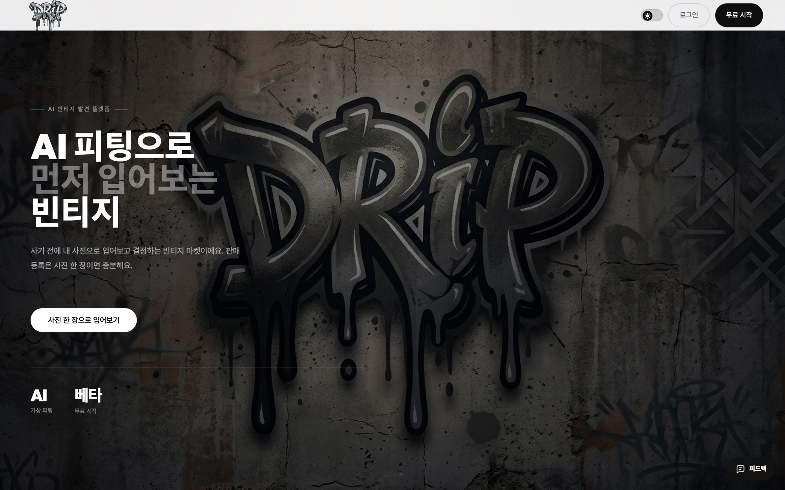
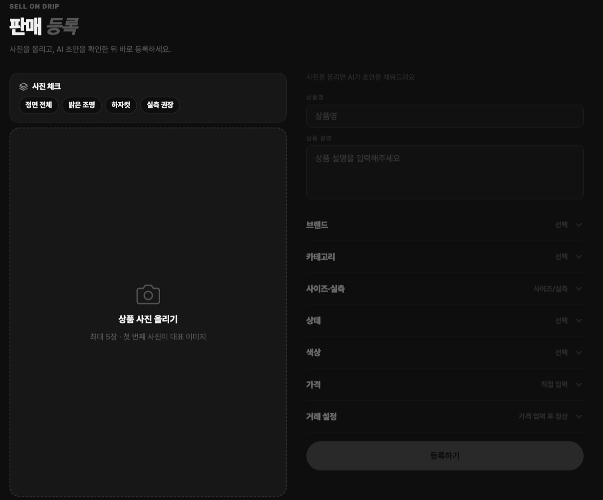
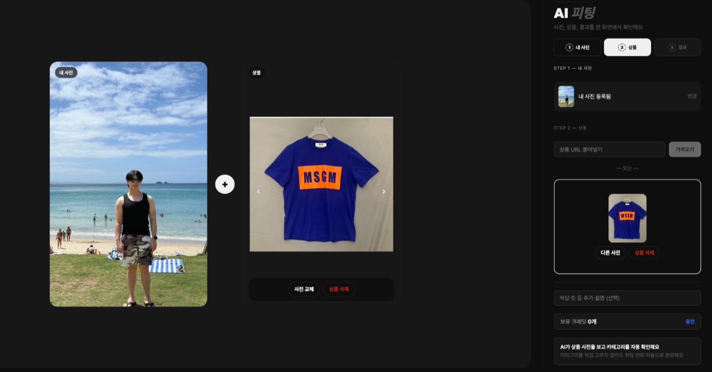
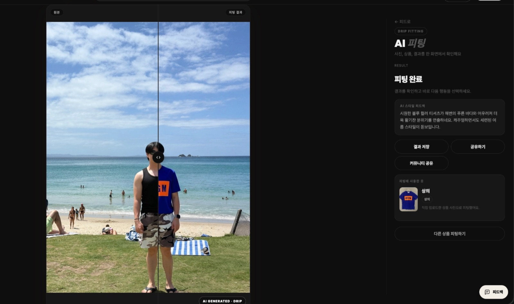
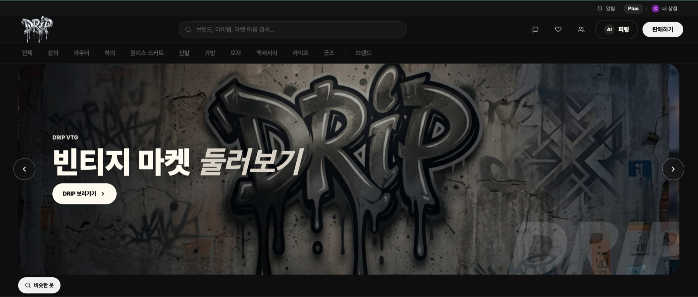

01 — 문제 정의
빈티지는 “입어보지 못하고 사는” 실패가 반복됩니다.
기존 중고 플랫폼의 한계를 세 가지로 정의하고, 각각에 1:1로 대응하는 기능으로 서비스 구조 전체를 설계했습니다.
- 아는 브랜드만 검색하게 된다
- 사기 전엔 어울리는지 알 수 없다
- 상품 등록이 번거롭고 오래 걸린다
- 피드에서 몰랐던 브랜드를 발견
- AI 가상 피팅으로 구매 전 확인
- 사진 한 장으로 AI가 등록 초안 작성
02 — UX 결정
등록 장벽을 사진 한 장으로 낮췄습니다.
중고 거래에서 판매자의 가장 큰 이탈 지점은 “귀찮은 등록”입니다. 그래서 판매자가 사진만 올리면 AI가 브랜드·컨디션·설명 초안을 채우고, 판매자는 확인·수정만 하도록 플로우를 뒤집었습니다. 입력을 요구하는 폼이 아니라, 이미 채워진 것을 다듬는 경험으로 설계한 결정입니다.

03 — UX 결정
구매 불안을 3단계 피팅으로 없앴습니다.
“내 몸에 어울릴까”라는 불안이 빈티지 구매의 가장 큰 마찰입니다. 내 사진 등록 → 아이템 선택 → 결과 확인의 3단계로 압축하고, 촬영 가이드를 내장해 실패율을 낮췄습니다. 결과는 원본과 나란히 비교해 “사기 전 확인”이라는 가치를 화면으로 증명했습니다.


04 — 브랜딩
이름부터 마이크로카피까지, 하나의 목소리로.
그래피티 로고와 모노크롬 아트 디렉션으로 빈티지 특유의 거친 무드를 잡고, “사기 전, 먼저 입어보기”라는 히어로 카피부터 전환 CTA까지 랜딩 전체를 직접 제작했습니다. 네이밍·톤앤매너·마이크로카피가 하나의 목소리로 이어지도록 다듬으며, 브랜드는 일관성으로 완성된다는 것을 체득했습니다.

05 — 배운 점
디자인은 화면이 아니라 비즈니스라는 것.
상품 발견부터 결제까지 전 구매 흐름을 직접 설계하고 출시 직전 단계까지 완성해보며, 화면을 잘 만드는 것과 서비스를 실제로 운영하는 것은 다른 문제라는 것을 배웠습니다. 통신판매업 신고나 안전거래 같은 운영 요건이 코드 밖에 있다는 것을 알게 된 프로젝트였습니다.